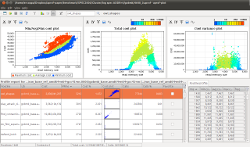
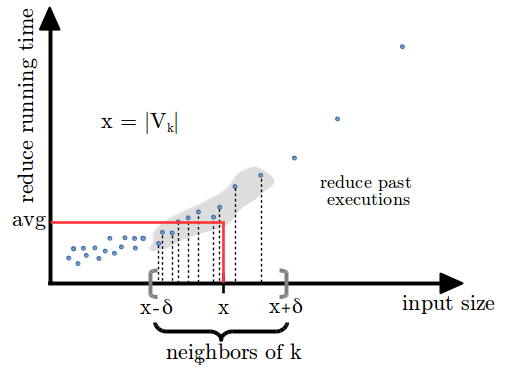

The SoftwarE AnalysiS and OptimizatioN (aka SEASON) Group [...]
People
Camil Demetrescu
demetres [at] dis.uniroma1.itAssociate Professor at DIAG
Sapienza University of Rome
[website] [dblp]
Daniele Cono D'Elia
delia [at] dis.uniroma1.itPhD Student at DIAG
Sapienza University of Rome
[website] [dblp]
Other collaborators:
- (former) Luca Di Maio, Master Student, DIAG
- (former) Romolo Marotta, Bachelor Student, DIAG
Projects

aprof - input-sensitive profiling
aprof is a Valgrind tool for performance profiling designed to help developers discover hidden asymptotic inefficiencies in the code. From one or more runs of a program, aprof measures how the performance of individual routines scales as a function of the input size, yielding clues to its growth rate.Related papers: [CDF-PLDI12] [CDFM-CGO14] [CDF-TSE-14] [C-VAL14]

NearestFit - predicting MapReduce performance
The NearestFit progress indicator targets accuracy of progress predictions for MapReduce jobs in the presence of data skewness and super-linear computations. This is achieved combining performance profiling, machine learning techniques, and data streaming algorithms.Related papers: [CF-SOCC15]
Opportunities
A list of research opportunities:
- Malware analysis:
- Dynamic Program Analysis:
- Adaptive Optimization:
- Big Data Performance Prediction:
Publications
A list of our latest publications:
- [DD-CGO16] Daniele Cono D'Elia and Camil Demetrescu. Flexible On-Stack Replacement in LLVM. 2016 International Symposium on Code Generation and Optimization (CGO 2016), 2016.
- [DDF-SPE15] Daniele Cono D'Elia, Camil Demetrescu, and Irene Finocchi. Mining Hot Calling Contexts in Small Space. Software: Practice and Experience, John Wiley & sons, 2015.
- [DFR-TOPLAS14] Camil Demetrescu, Irene Finocchi, and Andrea Ribichini. Reactive Imperative Programming with Dataflow Constraints. ACM Transactions on Programming Languages and Systems (ACM TOPLAS), 37(1), pp 1-53, 2014.
- [CF-SOCC15] Emilio Coppa and Irene Finocchi. On data skewness, stragglers, and MapReduce progress indicators. Sixth AC M Symposium on Cloud Computing (SoCC'15), pp 139-152, 2015. [DOI] [PDF] [SLIDES]
- [C-VAL14] Emilio Coppa. An interactive visualization framework for performance analysis. 8th International Conference on Performance Evaluation Methodologies and Tools (VALUETOOLS 2014), pp 159-164, 2014. [DOI] [PDF] [SLIDES] [PROJECT SITE]
- [CDF-TSE-14] Emilio Coppa, Camil Demetrescu, and Irene Finocchi. Input-Sensitive Profiling. IEEE Transactional on Software Engineering (IEEE TSE'14), 40(12), pp 1185-1205, 2014.[DOI] [PDF] [PROJECT SITE]
- [CDFM-CGO14] Emilio Coppa, Camil Demetrescu, Irene Finocchi, and Romolo Marotta. Estimating the Empirical Cost Function of Routines with Dynamic Workloads. 12th IEEE/ACM International Symposium on Code Generation and Optimization (CGO 2014), pp 230-239, 2014. [DOI] [PDF] [SLIDES] [PROJECT SITE]
- [DDF-OOPSLA13] Daniele Cono D'Elia and Camil Demetrescu. Ball-Larus Path Profiling Across Multiple Loop Iterations. 28th ACM SIGPLAN Conference on Object-Oriented Programming, Systems, Languages, and Applications (OOPSLA'13), pp 373-390, 2013.
- [CDF-PLDI12] Emilio Coppa, Camil Demetrescu, and Irene Finocchi. Input-Sensitive Profiling. 33rd ACM SIGPLAN conference on Programming Language Design and Implementation (PLDI 2012), pp 89-98, 2012. [DOI] [PDF] [SLIDES] [PROJECT SITE]
- [ADFF-OOPSLA12] Giorgio Ausiello, Camil Demetrescu, Irene Finocchi, and Donatella Firmani. k-Calling context profiling. 27th ACM International Conference on Object Oriented Programming Systems Languages and Applications (OOPSLA'12), pp 867-878, 2012.
- [DDF-PLDI11] Daniele Cono D'Elia, Camil Demetrescu, and Irene Finocchi. Mining Hot Calling Contexts in Small Space. 32nd ACM SIGPLAN conference on Programming Language Design and Implementation (PLDI'11), pp 516-527, 2011.
- [DFR-OOPSLA11] Camil Demetrescu, Irene Finocchi, and Andrea Ribichini. Reactive Imperative Programming with Dataflow Constraints. 26th ACM International Conference on Object Oriented Programming Systems Languages and Applications (OOPSLA'11), pp 407-426, 2011.